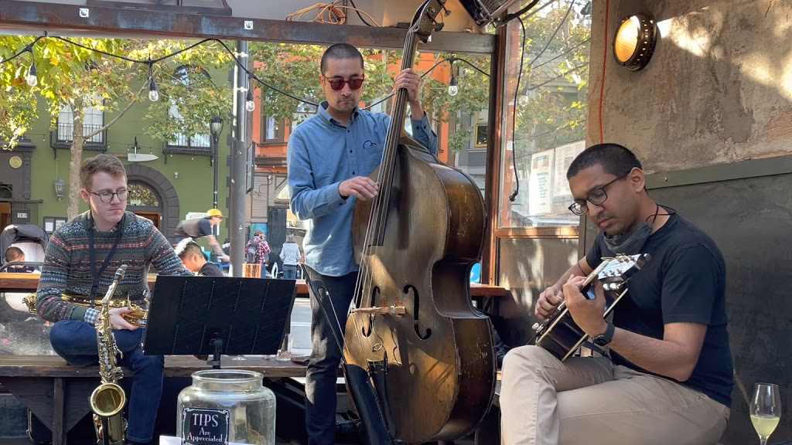
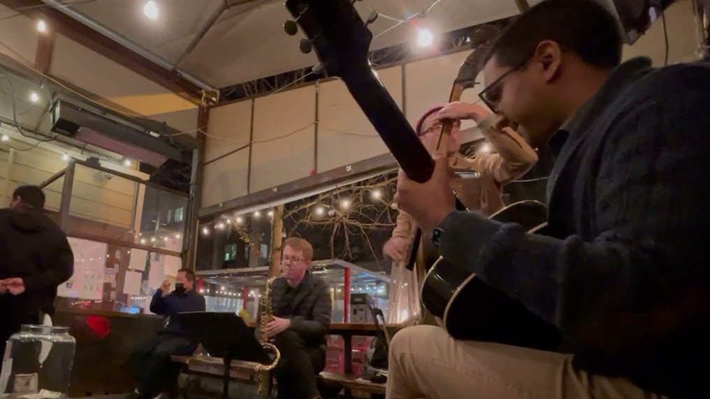
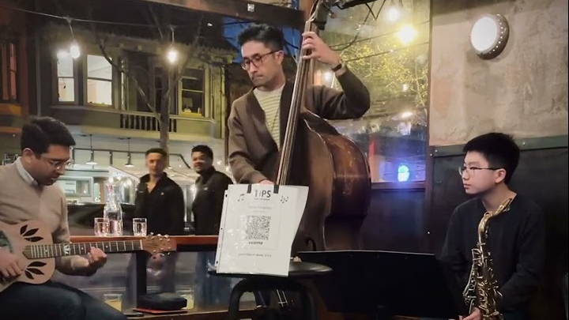

---
---

<main>
  <section class="full-bleed" style="background-image: url('images/background-1.jpg')">
  </section>
  <section class="narrow">
    <h3>{{ site.description }}</h3>
    <p>Catch the band live every 2nd Sunday at <a href="https://www.theliberties.com/" target="_blank">The
        Liberties</a>, every 4th Wednesday at <a href="http://blackthornsf.com" target="_blank">Blackthorn Tavern</a>,
      and once a month at <a href="https://www.curiobarsf.com/" target="_blank">Curio</a> (check their <a
        href="https://www.curiobarsf.com/live-music" target="_blank">live music schedule</a> for details).</p>
    <p><a href="about.html">Learn more</a> about the Curiosities, <a href="media.html">watch videos</a> of the band, <a
        href="albums.html">buy music</a>, or <a href="contact.html">get in touch</a>!</p>
  </section>
  <section>
    <h2>Videos</h2>
    <ul class="gallery">
      <li>
        <a href="https://www.youtube.com/watch?v=wwFzVnB9wbM" target="_blank">
          
          <h2>“Rose Room”</h2>
        </a>
      </li>
      <li>
        <a href="https://www.youtube.com/watch?v=eymEN3XNAi0" target="_blank">
          
          <h2>“Avalon”</h2>
        </a>
      </li>
      <li>
        <a href="https://www.youtube.com/watch?v=1bjHdlWVVZ0" target="_blank">
          
          <h2>“If I Had You”</h2>
        </a>
      </li>
    </ul>
  </section>
</main>